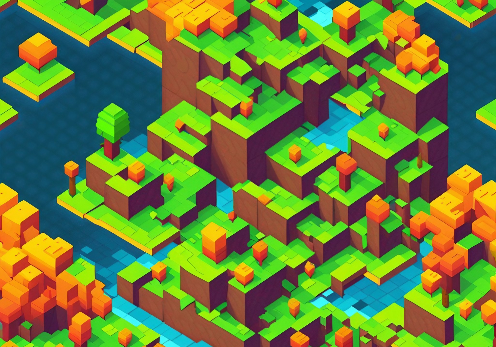
In the past several months we’ve seen great strides in the development of language models, especially in the private sector. Last year we saw several Minecraft-based environments released, including MineDojo and agents built on top of Minecraft such as VPT. This year we’ve seen agents that build on top of SOTA LLMs and libraries along with existing libraries, such as STEVE-1, Voyager, and GITM.
All of these are built on top of Minecraft and usually the MineRL environment. To meet our own research needs, we’ve been building a separate stack on top of the Minetest voxel engine.
What is Minetest, and why build an RL environment around it?
The primary motivation for this project is to do and enable alignment research with AI agents that falls outside of the current language modelling paradigm. While progress for Minecraft-based RL agents has been significant, we find there are a few limitations to existing frameworks that make it more difficult for us to study the problems we’re interested in.
The first is a practical matter of transparency and software support. Existing frameworks are built on stacks involving multiple projects. For instance, with MineRL the stack looks as follows:
MineRL -> Malmo -> Minecraft -> Minecraft dependencies -> (???)
Minecraft itself is a closed-source game and must be decompiled for modding. Malmo is an old framework by Microsoft, and the original framework has not been updated for half a decade. This is not ideal from a software engineering and maintainability perspective. Adding new functionality requires reverse engineering and modifying quite a bit of old code.
This is in contrast to Minetest, where the entire stack is fully transparent, the codebase is smaller, and every dependency is open-source. This makes it easy for devs to dig into any component that could be causing an issue and lets us put our hooks directly into the Minetest game itself without unnecessary layers of indirection.
Another issue revolves around customizability: in the long term, we intend to support modes of operation in Minetest that are not really possible with existing frameworks. This includes synchronous and asynchronous multi-agent and human-agent interaction in game.
The last big reason is first-class modding support in Minetest. Minetest bills itself not as a game but more as a “Voxel Engine”, and as such, it is highly customizable. This makes it much easier to add modifications to the game physics to support specific experiments.
How does Minetester work under the hood?
Minetester extends the standard Minetest environment in a few ways centred around enabling RL research.
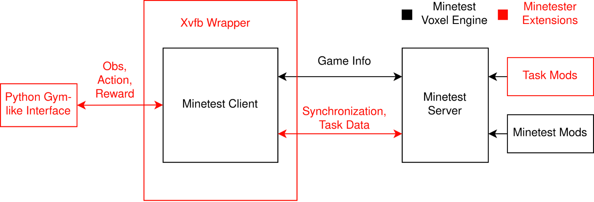
Auxiliary data and communication (reward, feedback, etc.)
The most important feature of Minetester is its extension of the modding API. This makes it possible to enable reward information to be relayed back to the client programmatically.
Client-server synchronisation
To keep the RL problem deterministic and the dynamics consistent, Minetester sends additional information between the client and the server to enable both to operate in lockstep.
Headless operation
Minetester supports 2 methods of headless operation. The first uses the Xvfb virtual framebuffer to encapsulate the Minetester process, the second, a WIP compile-time solution that replaces the standard rendering backend with an SDL2 headless backend.
Python client wrapper
Finally, the overall system is encapsulated in a Python wrapper that serves as an interface to AI agents built in modern ML frameworks.
Minetester baselines: PPO
To begin, we demonstrate basic usage of Minetester with a simple policy trained to just break wood. We started with PPO since it’s one of the simplest RL algorithms.
The first thing we noticed is that, without assistance, these algorithms don’t work at all, even for a “simple” task like breaking wood. By default, these simple algorithms will tend to flail around randomly. When they do manage to break a block, it’s very rare for it to be anything that would generate reward, so off-the-shelf algorithms don’t really work.
There are many different ways to deal with this. Ideally one would rely on more principled methods based on incentivising exploration and skill-building that naturally stumbles upon and quickly learns that breaking wood produces a reward. However, actually pulling this off is rather difficult, and we’re not aware of anyone successfully following this approach. Instead systems rely on other popular approaches that leverage prior knowledge and behavioural cloning. This was the approach taken by OpenAIs VPT and STEVE-1. Another tactic is just to make the problem easier. This is what DeepMind did with DreamerV3 and arguably what was done with GPT-4-based agents, which used APIs to dramatically simplify the action space.
In our case we opted to do something similar through a combination of reward-shaping and locking certain actions to further reduce the difficulty of the problem. Implementing both of these modifications in the Minetester framework is straightforward and simplifies the environment significantly.
On the agent side, we can simplify the action space and incentivise certain actions using standard modifiers to the gym environment. In our case we restrict the action space to just a few camera actions, moving left, right, and forward, and incentivising jumping with additional reward.
class AlwaysDig(MinetestWrapper):
def step(self, action):
action["DIG"] = True
obs, rew, done, info = self.env.step(action)
return obs, rew, done, info
An example custom wrapper that makes the task easier by locking an action for the agent.
On the environment side, we can implement more well-shaped reward functions by leveraging Minetest’s modding API. This lets us specify reward values for things like having a tree in frame, being in proximity to a tree, or breaking wood.
-- reward chopping tree nodes
minetest.register_on_dignode(function(pos, node)
if string.find(node["name"], "tree") then
REWARD = 1.0
end
end)
Together these modifications make the problem tractable to learn for a simple PPO setup.

Interpreting the PPO baseline policy
*Note: The following section is best understood by following along with the notebook and model policy described here.
Even this simple policy contains interesting structure that we can deduce by inspecting the weights of the network and how it reacts to real data.
Whitebox interpretability without grounding
We start by analysing the learned policy in a vacuum. This lets us make general statements about the structure of the network before we see how it reacts to real data.
Activation probing/deep dreaming Since this is a visual model, we can copy some of the techniques from OAI’s circuits publication. For instance, since the network we use is a ConvNet, we can use gradient ascent to probe what kind of image patches activate different neurons in the network. In our case, some quantities are particularly interpretable. These include actor-critic outputs and low-level neuron activations.
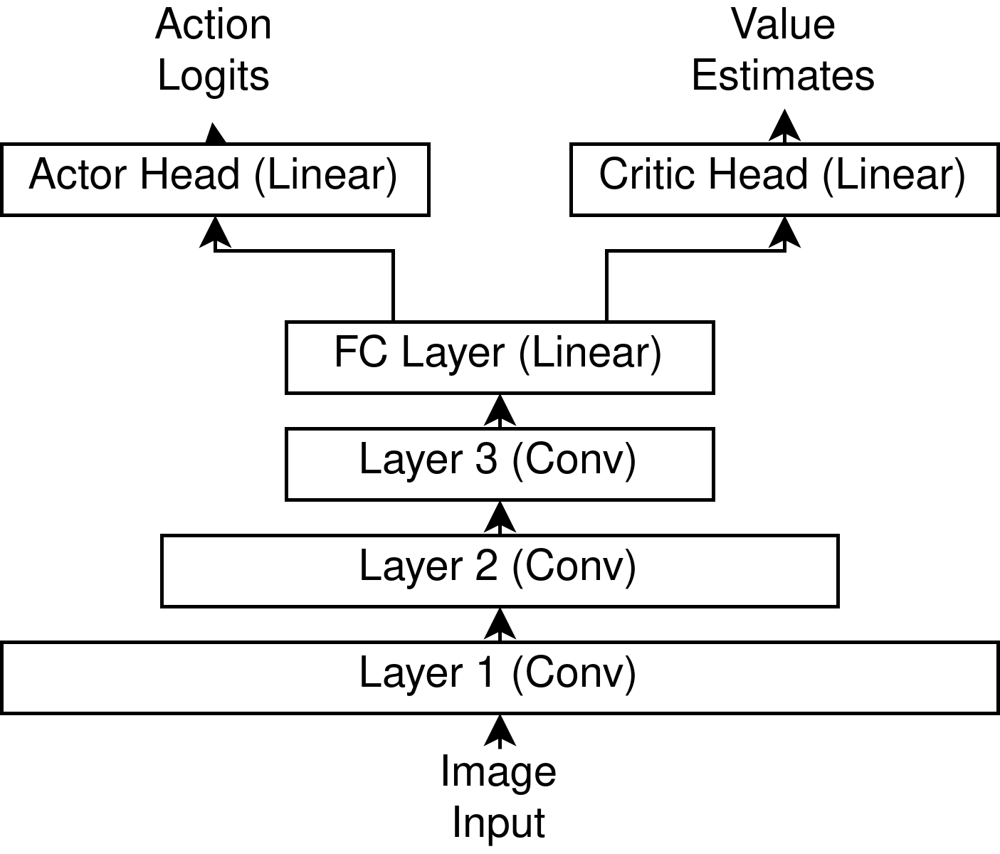
This lets us ask questions like “What kind of images have high expected value?” and “What kind of images make the agent want to carry out a certain action, such as moving left/right?”
Doing this for high-value states is not super enlightening, but we do see a certain repeating low-level pattern show up.
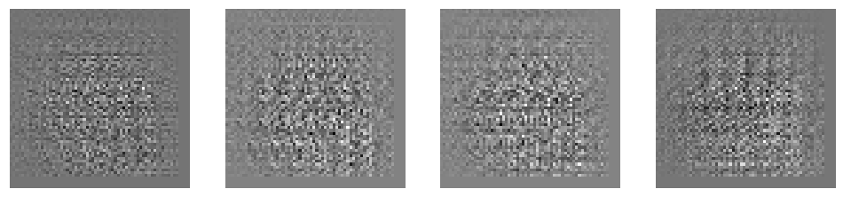
Another thing we can do is backprop through the probability that the agent preferentially turns to the right/left, which, going forward, we’ll call the yaw probability. These results are much less clean than what we see when deep dreaming with heavily trained classifiers. However, we can still make out some patterns. In particular, we see that the network is paying more attention to something closer to the middle-left of the screen when it wants to turn left, and stuff closer to the edges when it wants to turn right.
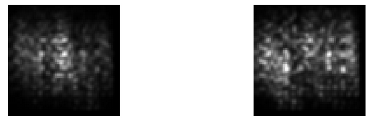
This is very flimsy evidence, but it gives us a hypothesis for how the policy might work. The network always moves forward and jumps with some probability, but it needs to orient itself towards trees. Trees are “rough”, and if it sees “rough” on the right of its FOV, it orients itself to the right. Otherwise it does the opposite.
Other observations
We made a few other minor observations.
The first is that the network is clearly not symmetrical, which is surprising since the environment itself is mostly symmetrical. We suspect that this is mostly an artefact of training noise, but it’s possible that “symmetry breaking” in the policy is actually optimal.
The second is when you look at the matrices for the actor and the critic. The vectors are very much not random. Notably their dot-products are larger than random, indicating that both actor and critic heads are paying attention to the same features coming out of the base network.
Analysing real images and assessing actions values
Now that we have a hypothesis for what’s going on from looking at the network, we can see how the model reacts to real inputs to try to understand how the policy works in the environment. Since Minetest is a user-playable game, we can simply load it up and take some screenshots to feed into the network. One thing to note is that to make things faster and more computationally tractable, the input pipeline lowers the resolution of the inputs and strips away colour information. We can compare what the raw environment returns with what the network sees.
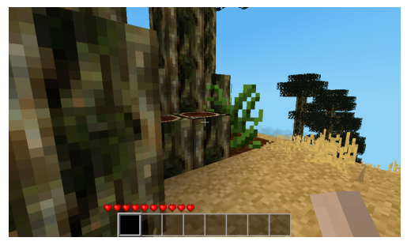
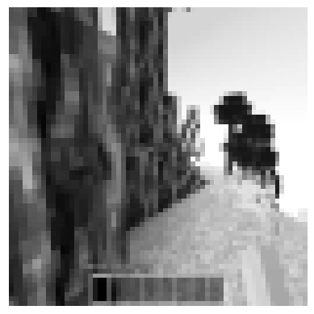
Due to downscaling and conversion to grayscale many details about the environment are lost to the network.
With that said, we can still take a look at how the network operates. We’re mainly interested in the yaw probability.
When feeding in real data we can very clearly confirm the network is implementing some kind of control system. This is made very clear by looking at how the yaw probability changes when we mirror an image or look at how the network reacts to a screenshot with a tree on the right or the left. This works with several different tree types and backgrounds.
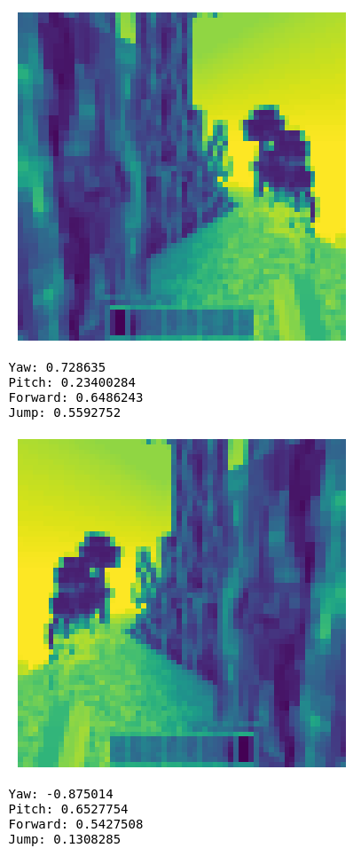
One thing we can check is how general this control system is. One way to do this is to evaluate the behaviour slightly out of distribution. Since the most straightforward hypothesis for how this network works is that it checks for brightness differences, we can either change textures or check how the network reacts to trees at night, where the contrast is inverted.
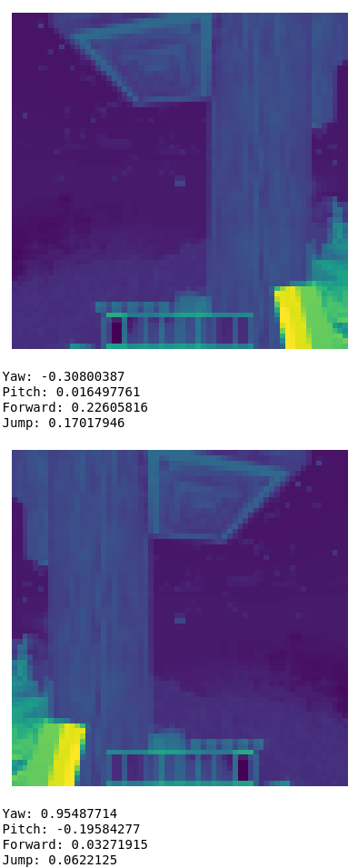
The network still works. This rules out the possibility that the network is using something like light/dark on the right/left side of the screen to orient itself.
Drilling into the network
The final and arguably hardest piece of the puzzle is to figure out how the network actually implements this control system in a way that explains our previous observations. This is rather difficult. To do so we drill into the network to better understand what its internals are doing. Since the network uses ReLU activations, we make the simplifying assumption that axis-aligned features are semantically meaningful. This is because ReLUs transform the data in an axis-aligned way. With this assumption, we can probe how convolutional neurons at each level of the network react to images.
Layer 1
The first layer contains simple linear filters, we can see a few different features, edge detectors, light detectors, and darkness detectors. This is straightforwardly visible by lining up the generated images with the regular images.
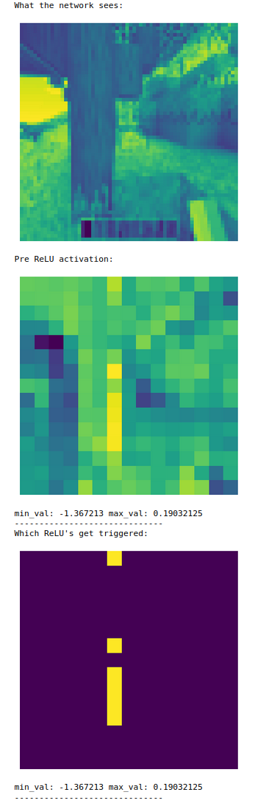
Layer 2
With a single layer of non-linearity, the features tend to get more complicated. Overall the features tended to fall into 3 categories.
-
The most common features were sensitive to the overall brightness of an image patch and would tend to either reflect or invert the brightness of the underlying image patch they observed.
-
After this there was a large group of features that we were not able to effectively interpret. Their activation patterns did not clearly correspond to any feature in the images.
-
Finally we did find 1 neuron that seemed to fairly consistently act as a tree detector.
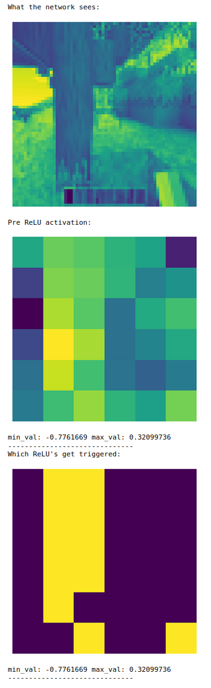
Layer 3
Neurons in layer 3 behaved approximately the same way, including a neuron that acted as a tree detector. To confirm that this feature played a role in the decisions made by the network, we computed the gradient w.r.t the yaw probability of the feature and found that activation of the neuron corresponded to a strong gradient in the direction that we expect.
Concrete takeaways
Unfortunately, while we were able to identify individual components of the NN that corresponded to behaviours that we were interested in, we found diminishing returns to further drilling into the model, and we were not able to fully understand it. We can clearly see that the model actually does have reasonably fine-grained control of its actions. We can see it demonstrating advanced techniques, like not breaking the bottom log so that it can climb on top of it to reach and break more “branch” logs.
This investigation brought up several pain points in the workflow that we intend to improve going forward. Most of this revolves around our tooling.
The first is not having easy translation between what the user sees and does and what the network sees and does. The pipeline we’re using in the notebook was reconstructed by inspecting both the OAI Gym and the Minetester codebases, but ideally this would be done automatically.
The second is not having good facilities for recording user actions. For the purposes of this investigation, taking screenshots was sufficient to extract usable information, but as complexity ramps up, this will likely become insufficient.
The third is a general lack of tooling for interpretability research in the JAX ecosystem. For PyTorch, there are tools like TransformerLens, which makes interpretability of transformers easier, but as of this writing we’re unaware of any JAX equivalents.
More general/speculative takeaways
While these takeaways are less thoroughly supported by our investigation, they are high-level intuitions we’ve gathered from investigating the policy.
There’s a big gap between a working NN and an easily interpretable one.
Unlike with ConvNets for classification, this network seemed to have much less structure. Standard techniques for understanding them often showed much less structured information than what can be seen in something like VGG.
In RL environments, understanding what the policy is doing is significantly easier with an understanding of the structure of the environment.
The algorithm that the policy seems to implement is, at least on the surface, pretty simple: some circuitry to detect trees or associated features along with control circuitry that biases the agent to turn in one direction or the other, all the while encouraging the agent to move forward or jump. However, without at least a decent understanding of the game's mechanics, the effect of this policy is very difficult to determine. Even with a solid understanding of the game, without knowing the training objective ahead of time, and without access to entire episodes, determining the ultimate effects of the policy seems like it would be significantly more difficult.
It seems that perhaps model-based RL agents might be more interpretable, since they “internalise” their environment better. However, this is likely never going to work completely (since you can’t fit the whole universe inside your model), and other techniques will be necessary to understand how agents behave in environments we don’t fully understand ourselves.
The structure of the network and the training algorithm plays a key role in facilitating interpretability.
This seems to be a recurring theme with learned models. The actual underlying structure of the model and how it’s setup plays an important role in enabling interpretability. Things like induction heads are an emergent circuit in transformers due to the attention mechanism and the transformer architecture. Likewise, DeepDream-like visualisations in ConvNets are possible in part due to the restricted receptive fields and the continuous nature of their inputs. In our case, we exploited the convolutional structure and the relative simplicity and interpretability of our action/value mapping to at least partially reverse engineer the mechanics of the model.
Ultimately, it seems that interpretability techniques that work best for a given situation are sensitive to the architecture being studied.
Interpretability and alignment should be first-class design considerations.
Right now the way that we design and build AI systems is by iterating on the capabilities of those systems until they are essentially as powerful as we can make them, then going about trying to understand the inner workings of the model or how to align the model to behave the way we want.
Speculating a bit, it seems likely that this is a suboptimal way of going about things. If we intend to build systems that are interpretable and/or reliably aligned, alignment and interpretability will have to be first-class design considerations so that the necessary hooks to understand what’s going on are baked into the model.
Next Steps
Gymnasium: collaboration with the Farama Foundation and multi-agent support
The current Minetester environment is built around the old OpenAI Gym API, but this is an outdated and unsupported API. The Farama Foundation has reached out to us, and going forward we plan to move to their more up-to-date Gymnasium API, which is a drop-in replacement with extra features and up-to-date maintenance. We also intend to work more closely with them on expanding the package further and adding new functionality, such as multi-agent support.
Action recording and generative Minetest models
While policy gradient is simple and straightforward to implement, it’s clearly limited. The next step we plan to take is to implement infrastructure for recording user actions. This will enable behavioural cloning and generative models of Minetest that are similar to DeepMind’s DreamerV3.
Model based RL
The long-term goal is to study embedded agency failure modes in the context of RL. As such, we plan to implement some MBRL baselines so that we can start studying how to interpret what they’re doing.
Join us!
The Minetester project is large, and the number of different things to work on continues to grow. Checkout the #alignment-minetest project in our Discord to get involved. We have plenty of room for additional volunteers to contribute to different facets of the project.